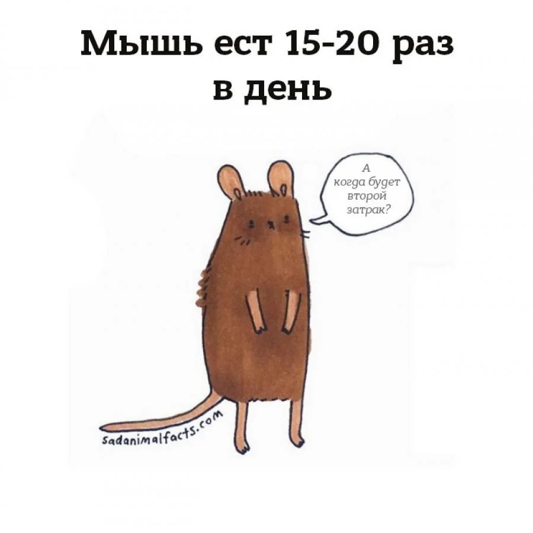
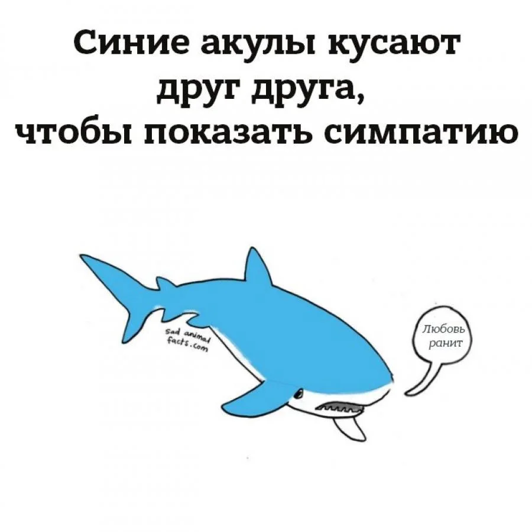
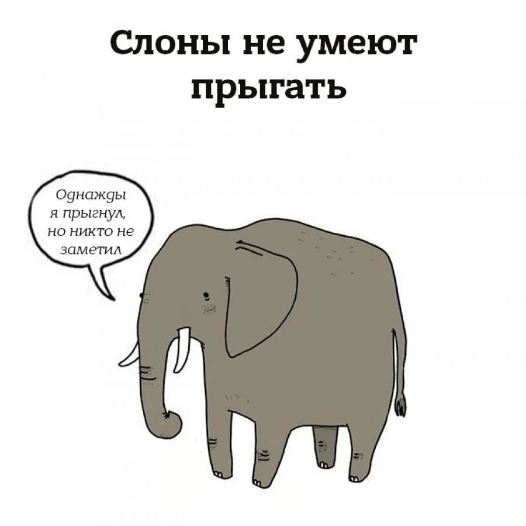
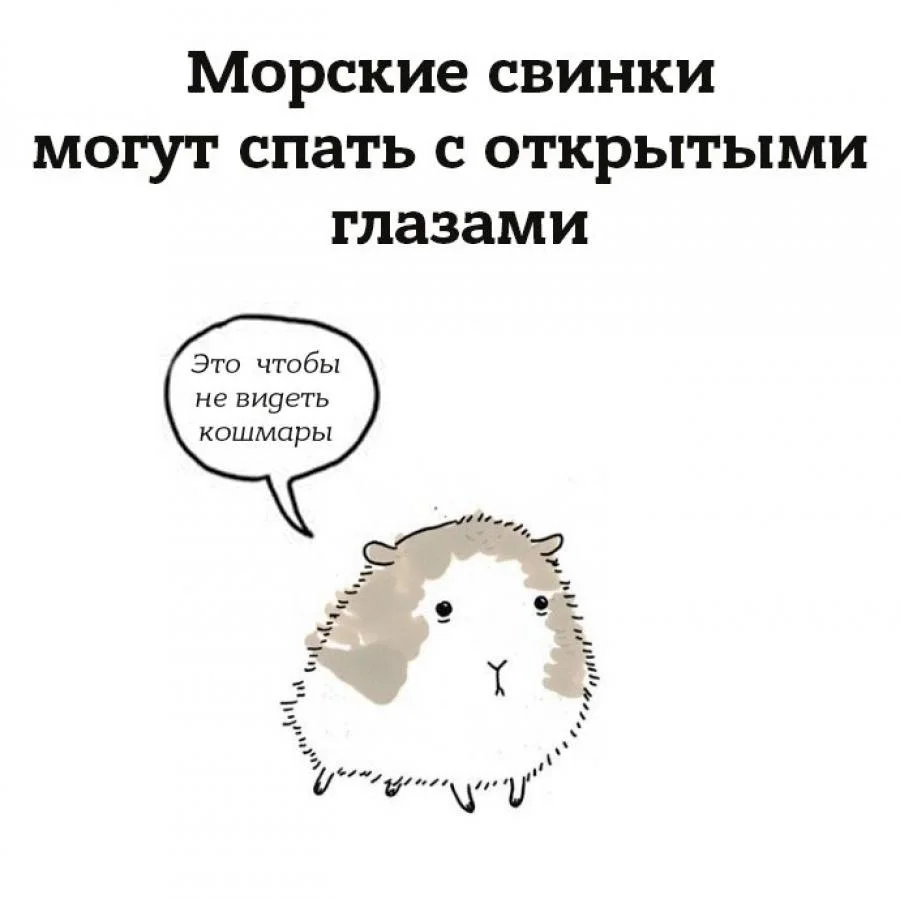
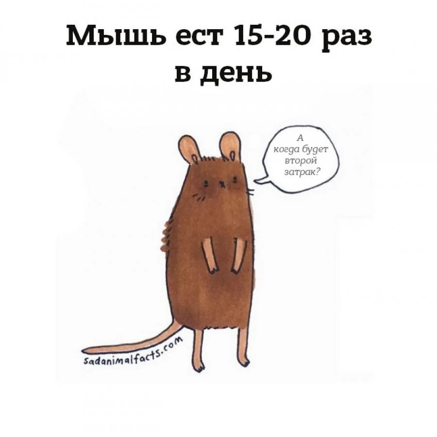
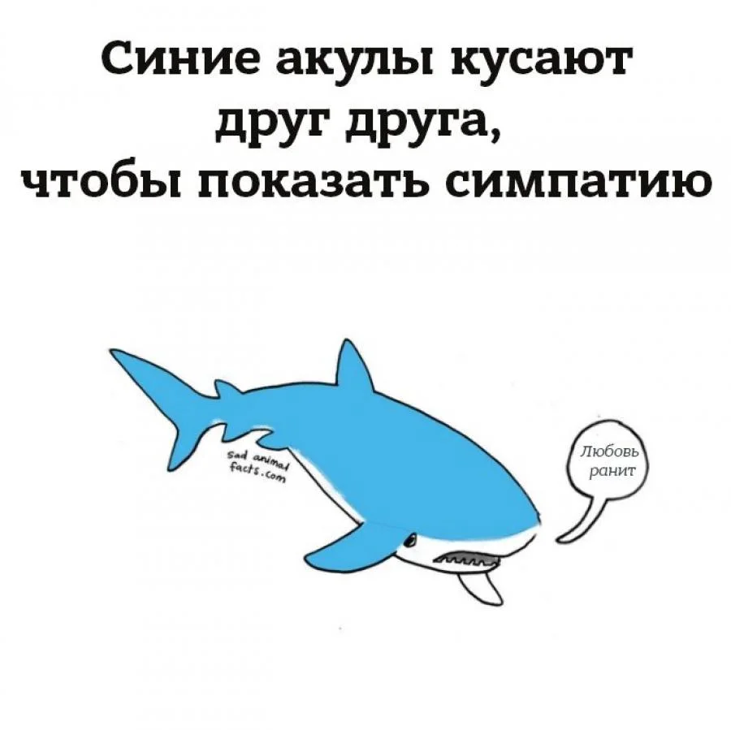
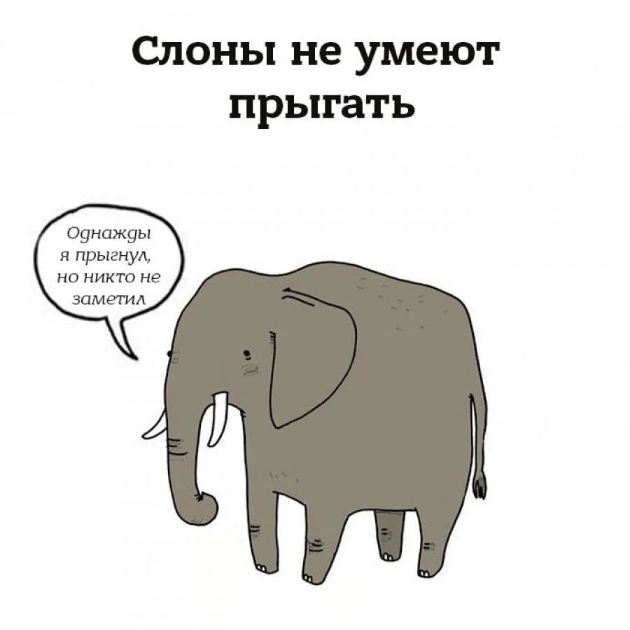
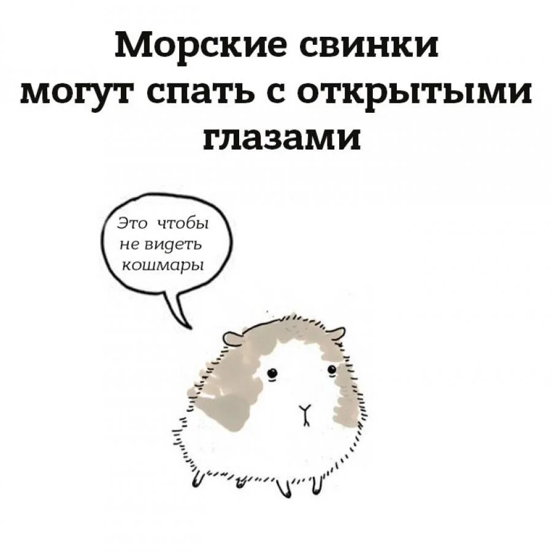

Американская художница превратила грустные факты о животных в веселые иллюстрации
Любимый факт Брук о том, что вороны никогда не забывают лица.
"Они не просто запоминают лица, они могут описывать их друг другу. Я боюсь, как бы я не совершила какую-нибудь бестактность по отношению к ним", - рассказала художница изданию Mashable.
 






